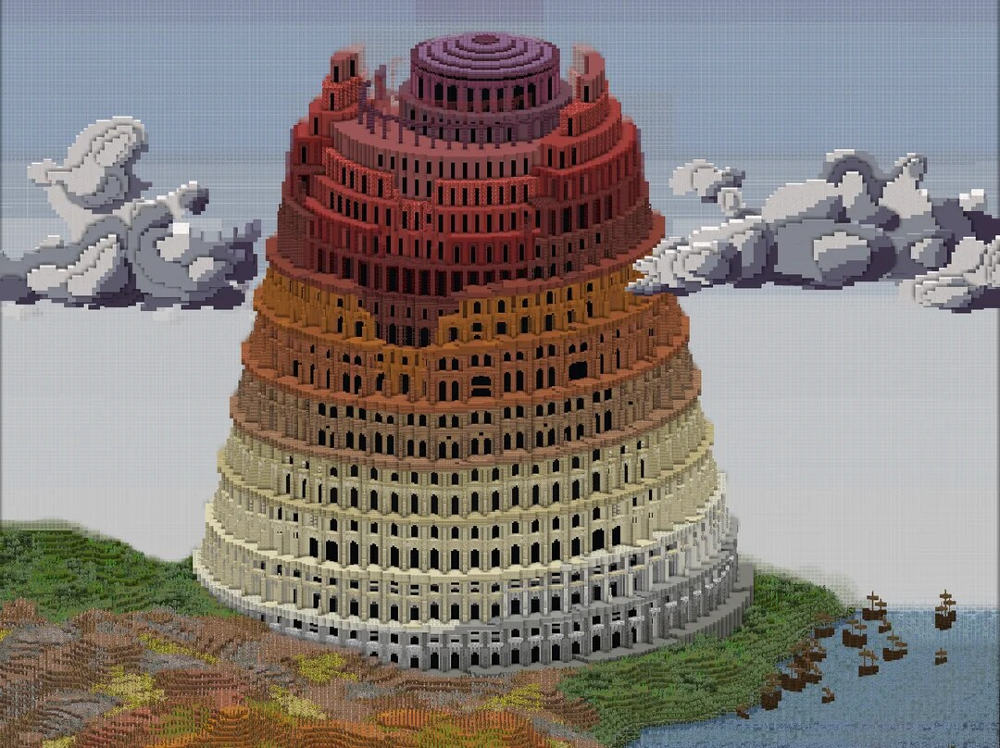

1. Babel as Symbol
What it represents: one human project, one shared direction, one giant system.
What it teaches: a knowledge system can unite people, but it can also become tangled with pride, centralization, and conflict.
Systems & Society · Lesson 04
Again and again, human beings have tried to gather all knowledge in one place and make it available to everyone. Sometimes that dream creates breakthroughs in learning. Sometimes it creates bottlenecks, power struggles, fragility, or information overload. This lesson follows that pattern from ancient story to ancient library to modern network.
Big Question
Each era builds a bigger container for knowledge: a tower, a library, a printing network, a search engine, a cloud archive. Each also discovers a weakness: language barriers, destruction, censorship, access gaps, bias, or too much information to sort.
Core Idea
Knowledge is never just about what is stored. It is also about who controls it, who can reach it, and what happens when the system breaks.
Timeline
These moments are not identical, but they share a common dream: collect, organize, and spread as much knowledge as possible.

Three Models
What it represents: one human project, one shared direction, one giant system.
What it teaches: a knowledge system can unite people, but it can also become tangled with pride, centralization, and conflict.
What it represents: collecting, copying, preserving, and organizing texts in one world-class center.
What it teaches: knowledge needs librarians, classification, translation, and long-term care, not just storage space.
What it represents: distributed, global, searchable knowledge shared across devices and platforms.
What it teaches: decentralization increases access, but it can also make truth harder to verify and quality harder to protect.
Ups and Downs
Compare
Strength: careful curation, scholarship, and focused preservation.
Weakness: knowledge is concentrated in one institution and depends on political stability.
Main problem: if the center fails, an enormous amount can be lost.
Strength: massive scale, instant copying, and global access.
Weakness: low barriers to publishing make quality uneven and manipulation easier.
Main problem: if everything is available, deciding what is trustworthy becomes the hard part.
Knowledge Systems Lab
Switch between centralized and distributed systems, then see what happens when a crisis hits. After that, test whether your problem is access or filtering.
Read the Lab
Event Log
Signal vs. Noise
Find the target fact. In Alexandria mode, there are only a handful of carefully selected sources. In Internet mode, there are many more voices, but most are low-quality or misleading.
Think
A strong knowledge system must balance access, preservation, trust, and freedom. Use these prompts to test whether our modern systems are actually improving.